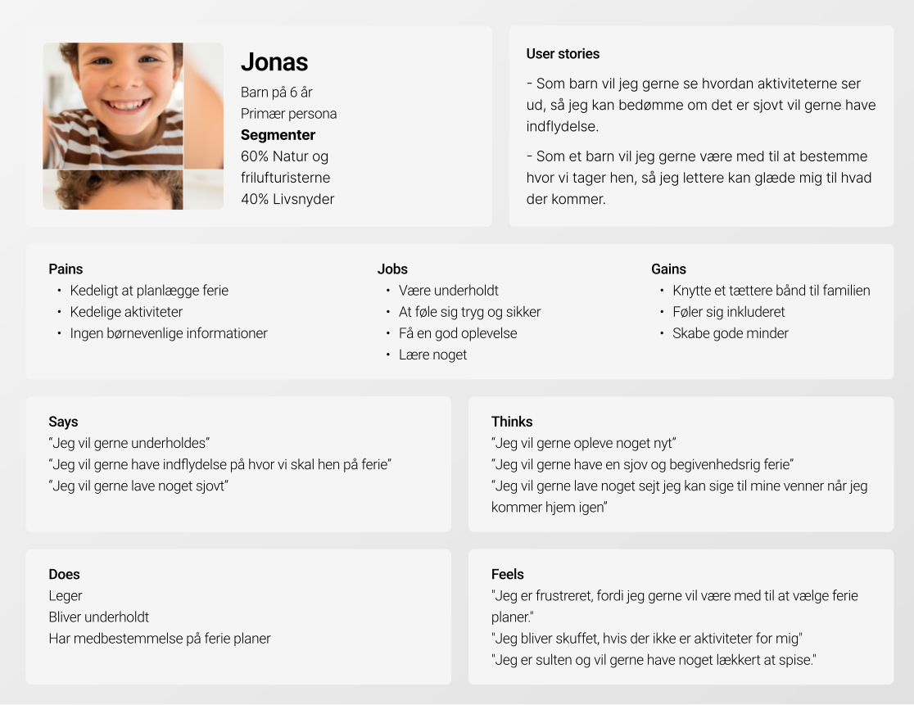
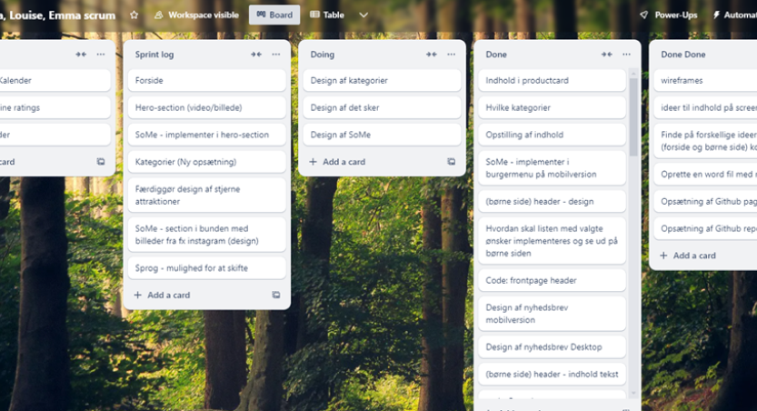

I dette projekt har vi fokuseret på at integrere en dedikeret side for børn, hvor de kan navigere og aktivt vælge de aktiviteter, familien skal deltage i under ferien. Destination Sønderjylland ønskede et redesign med særligt fokus på børnefamilier, hvilket vi tog højde for i vores tilgang
Persona
For at sikre, at vi imødekom børns behov og præferencer, brugte vi en persona, der gjorde det muligt for os at sætte os i børnenes sted. Personaen hjalp os med at forstå, hvad børnene ville efterspørge på hjemmesiden, og hvilke funktioner de fandt mest relevante. Dette førte til udviklingen af en separat børneside, hvor børnene var i centrum, og hvor de selv kunne træffe valg om ferieaktiviteter. Personaen guidede vores designbeslutninger, hvilket gjorde siden mere brugervenlig og engagerende for børnene.
Børneunivers
Denne børneside blev integreret på forsiden via et banner, som brugerne kunne klikke på for at komme ind i børneuniverset. Vi lagde vægt på, at børnesiden skulle fremstå som sit eget univers, tydeligt adskilt fra forsiden, for at skabe en engagerende og anderledes oplevelse for børnene.
Struktur & samarbejde
Vi implementerede Scrum for at fremme samarbejde i projektet. Gennem korte sprints kunne vi løbende justere vores arbejde. Ved at bruge Trello kunne vi effektivt prioritere opgaver og sikre hurtig feedback, hvilket hjalp os med at nå vores delmål og forbedre det endelige resultat.
Ideation
Tøm hovedet
Efter at have søgt inspiration, gik vi ind i ideationsprocessen med teknikken "tøm hovedet ideation". Her fik hver af os 1 minut til at skrive 1 idé, hvilket gav 10 ideer på 10 minutter. Vi udvalgte de mest lovende, som blev integreret i vores endelige produkt, herunder en "Header med fokus på Sønderborg" og "Dyr, der repræsenterer børnenes interesser".
Crazy 8
Efter at have søgt inspiration, gik vi ind i ideationsprocessen med teknikken "tøm hovedet ideation". Her fik hver af os 1 minut til at skrive 1 idé, hvilket gav 10 ideer på 10 minutter. Vi udvalgte de mest lovende, som blev integreret i vores endelige produkt, herunder en "Header med fokus på Sønderborg" og "Dyr, der repræsenterer børnenes interesser".
Think aloud test
Vi gennemførte en think-aloud test med tre børn i forskellige aldersgrupper for at teste vores hjemmeside, der skal hjælpe familier med at vælge aktiviteter til ferie. Børnene delte åbent deres tanker, mens de navigerede, og vi fik et klart indblik i, hvad der fungerede, og hvad der var forvirrende for dem.
Deres feedback gav os værdifulde indsigter, som vi nu kan bruge til at tackle de udfordringer, de mødte. Det hjælper os med at forbedre siden, så den bliver mere brugervenlig og sjov for børn at navigere i.